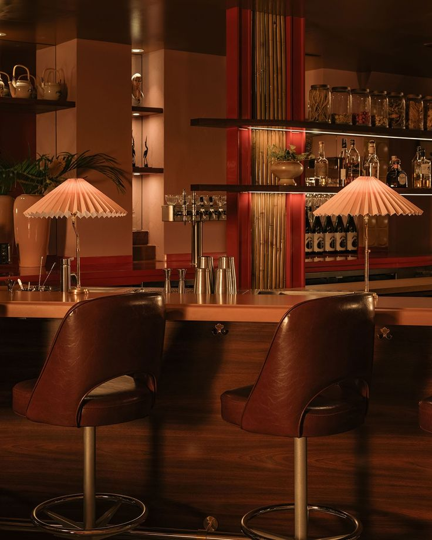

Our Services
From inception to opening and beyond — our services fully surround every stage of a project. Consistency, quality, and a singular creative intelligence at every scale.
We pair the precision of architecture with the sensuality of form — bringing Dravidian heritage, global modernism, and twenty-first century rigour to bear on every commission we take.

Interior Design
Our core offering — the full delivery of interior design from first napkin sketch through to built environment. We ideate, detail, and execute with the same philosophical rigour at every scale, from a single suite to a 1,100-key resort.
Every material is chosen for both its sensory quality and its cultural resonance. Every proportion is deliberated. Every detail resolved so that the finished space feels not designed but discovered.
- Concept development & mood
- Schematic & design development
- Material & finish specification
- Construction documentation
- Site observation & delivery
- Final styling & photography prep

Architecture
We shape buildings from the outside in and the inside out simultaneously — ensuring the spatial logic of the plan and the sensory experience of the interior are conceived as a single whole, not assembled in sequence.
Our architectural work spans hospitality, residential, and cultural typologies. We bring the same cultural intelligence that grounds our interiors to the structural decisions that define a building's character for generations.
- Feasibility & programming
- Schematic & design development
- Planning & permitting support
- Construction documentation
- Contractor coordination
- Construction administration

Hospitality Design
Hospitality is the art of arrival — the moment a guest crosses a threshold and understands, without being told, where they are. Studio Logan designs for that moment, and every moment that follows.
Our hospitality portfolio spans Marriott Signature properties, Ritz-Carlton resort interiors, Hard Rock integrated resorts, and boutique Auberge-affiliated hotels across three continents. We understand the operator's language and the guest's need for wonder simultaneously.
- Brand-aligned design narratives
- Lobby & public area design
- Guest room & suite design
- F&B and lounge environments
- Spa & wellness spaces
- Back-of-house efficiency planning

Residential Design
A home is not a product. It is the space where a life happens. Studio Logan approaches every residential commission as a portrait of the people who will inhabit it — deeply personal, deeply specific, designed for how people actually live.
From penthouses suspended above Manhattan to brownstones on Brooklyn's historic blocks, our residential work holds the tension between grandeur and intimacy that makes a house feel like a home.
- Client lifestyle research
- Full interior design delivery
- Custom furniture design
- Art & object curation
- Lighting design & specification
- Move-in styling

Branded Environments
Some spaces must do more than delight — they must communicate. Branded environments carry a story from the threshold to the last detail, translating identity into experience that guests, staff, and owners feel before they can articulate it.
We work with brands from inception — developing the spatial vocabulary that will define them — and with established operators looking to bring their identity into physical form with discipline and imagination.
- Brand-to-space translation
- Environmental graphic design
- Signage & wayfinding
- Custom fixture & furniture design
- Art feature design & delivery
- Tenant design guidelines

Commercial & Workplace
Workplaces shaped with strategic rigour and human warmth — spaces that perform on a brief and transcend it. We bring the same care to an office floor plan that we bring to a hotel lobby: understanding how people move, pause, gather, and think.
- Workplace strategy & programming
- Full interior design delivery
- Collaborative & focus space design
- Brand environment integration
Additional
Services
Beyond our core disciplines, we offer a range of supporting services that complete the project cycle — from early feasibility through post-opening refinement.
- —Feasibility & site visioning
- —OS&E direction & procurement
- —Custom furniture & lighting design
- —Art feature design & curation
- —Budget alignment & value engineering
- —Purchasing services
- —Final site styling & photography prep
- —Post-occupancy review

"From the macro to the micro — our philosophy honours craft, unique detail, and an honest celebration of how things are made."
— Loganathan Yeswanth, Founder
Start a project
Tell us about the space you're building. We'll bring the depth, rigour, and heritage it deserves.
Get in touch →